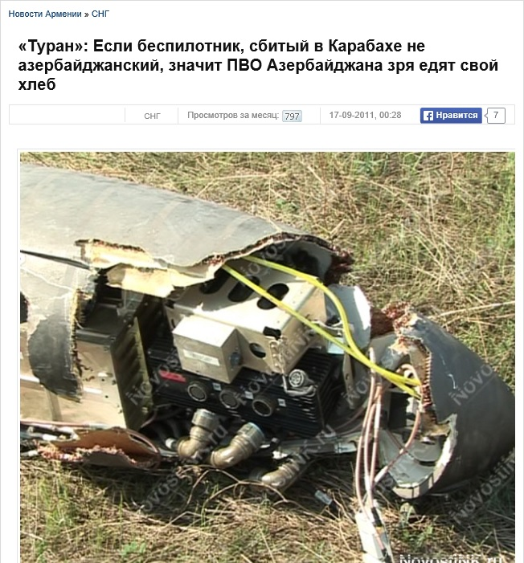

Ложь: донецкие «ополченцы» сбили беспилотник
Сайт «Новороссия» 28 мая 2014 года со ссылкой на руководство непризнанной ДНР (Донецкой народной республики) сообщил о том, что донецкие «ополченцы» якобы сбили украинский беспилотник над Донецком.
Однако эта информация не подтвердилась.А фотография беспилотника в статье сделана не в Донецке, а в Карабахе 17 сентября 2011 года.
Posted On: 2014-05-28T21:00:00

Content Date: 2014-05-28
Download Date: 2021-07-16
Document ID: L0C04FCGY